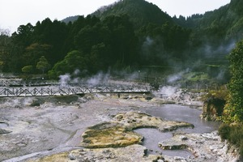
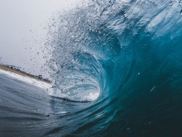

Explore the transformative world of renewable energy—solar, wind, geothermal, hydropower, ocean, and bioenergy. These technologies offer cleaner, greener solutions for a sustainable future. Join us in uncovering their unique strengths and contributions to mitigating climate change. Welcome to the forefront of renewable energy.
Solar energy

"Solar energy is the most abundant of all energy resources and can even be harnessed in cloudy weather. The rate at which solar energy is intercepted by the Earth is about 10,000 times greater than the rate at which humankind consumes energy. Solar technologies can deliver heat, cooling, natural lighting, electricity, and fuels for a host of applications. Solar technologies convert sunlight into electrical energy either through photovoltaic panels or through mirrors that concentrate solar radiation.
Although not all countries are equally endowed with solar energy, a significant contribution to the energy mix from direct solar energy is possible for every country.
The cost of manufacturing solar panels has plummeted dramatically in the last decade, making them not only affordable but often the cheapest form of electricity. Solar panels have a lifespan of roughly 30 years, and come in variety of shades depending on the type of material used in manufacturing."
Nations, United. “What Is Renewable Energy?” United Nations, 2023, www.un.org/en/climatechange/what-is-renewable-energy?gclid=Cj0KCQiA6vaqBhCbARIsACF9M6n-ha3vCzAKbAcXO3-A2zmsSCSZCIUVv2mvyJMurzH0vtaKa_RfnlgaAqLuEALw_wcB. Accessed 22 Nov. 2023.
Wind Energy

Anything that moves has kinetic energy, and scientists and engineers are using the wind's kinetic energy to generate electricity. Wind energy, or wind power, is created using a wind turbine, a device that channels the power of the wind to generate electricity.
The wind blows the blades of the turbine, which are attached to a rotor. The rotor then spins a generator to create electricity. There are two types of wind turbines: the horizontal-axis wind turbines (HAWTs) and vertical-axis wind turbines (VAWTs). HAWTs are the most common type of wind turbine. They usually have two or three long, thin blades that look like an airplane propeller. The blades are positioned so that they face directly into the wind. VAWTs have shorter, wider curved blades that resemble the beaters used in an electric mixer.
National Geographic Society. “Wind Energy | National Geographic Society.” Education.nationalgeographic.org, 20 May 2022, education.nationalgeographic.org/resource/wind-energy/. Accessed 22 Nov. 2023.
Geothermal Energy

Geothermal energy utilizes the accessible thermal energy from the Earth's interior. Heat is extracted from geothermal reservoirs using wells or other means. Reservoirs that are naturally sufficiently hot and permeable are called hydrothermal reservoirs, whereas reservoirs that are sufficiently hot but that are improved with hydraulic stimulation are called enhanced geothermal systems. Once at the surface, fluids of various temperatures can be used to generate electricity. The technology for electricity generation from hydrothermal reservoirs is mature and reliable, and has been operating for more than 100 years.
Nations, United. “What Is Renewable Energy?” United Nations, 2023, www.un.org/en/climatechange/what-is-renewable-energy?gclid=Cj0KCQiA6vaqBhCbARIsACF9M6n-ha3vCzAKbAcXO3-A2zmsSCSZCIUVv2mvyJMurzH0vtaKa_RfnlgaAqLuEALw_wcB. Accessed 22 Nov. 2023.
Hydropower

Hydropower, or hydroelectric power, is one of the oldest and largest sources of renewable energy, which uses the natural flow of moving water to generate electricity. Hydropower currently accounts for 28.7% of total U.S. renewable electricity generation and about 6.2% of total U.S. electricity generation. While most people might associate the energy source with the Hoover Dam—a huge facility harnessing the power of an entire river behind its wall—hydropower facilities come in all sizes. Some may be very large, but they can be tiny, too, taking advantage of water flows in municipal water facilities or irrigation ditches. They can even be “damless,” with diversions or run-of-river facilities that channel part of a stream through a powerhouse before the water rejoins the main river. Whatever the method, hydropower is much easier to obtain and more widely used than most people realize. In fact, all but two states (Delaware and Mississippi) use hydropower for electricity, some more than others. For example, in 2020 about 66% of the state of Washington's electricity came from hydropower.
US Department Of Energy. “Hydropower Basics.” Energy.gov, 2014, www.energy.gov/eere/water/hydropower-basics. Accessed 22 Nov. 2023.
Ocean energy

Wave energy is generated by converting the energy within ocean waves (swells) into electricity. There are many different wave energy technologies being developed and trialled to convert wave energy into electricity. Tidal energy comes in two forms, both of which generate electricity: Tidal range technologies harvest the potential energy created by the height difference between high and low tides. Barrages (dams) harvest tidal energy from different ranges. Tidal stream (or current) technologies capture the kinetic energy of currents flowing in and out of tidal areas (such as seashores). Tidal stream devices operate in arrays, similar to wind turbines. Ocean thermal energy is generated by converting the temperature difference between the ocean's surface water and deeper water into energy. Ocean thermal energy conversion (OTEC) plants may be land-based as well as floating or grazing.
ARENA. “Ocean Energy - Australian Renewable Energy Agency (ARENA).” Australian Renewable Energy Agency, 2018, arena.gov.au/renewable-energy/ocean/. Accessed 22 Nov. 2023.
Bioenergy
When biomass is used as an energy source, it's referred to as "feedstock". Feedstocks can be grown specifically for their energy content (an energy crop), or they can be made up of waste products from industries such as agriculture, food processing or timber production. Dry, combustible feedstocks such as wood pellets are burnt in boilers or furnaces. This in turn boils water and creates steam, which drives a turbine to generate electricity. Wet feedstocks, like food waste for example, are put into sealed tanks where they rot and produce methane gas (also called biogas). The gas can be captured and burnt to generate electricity. Or it can be injected into the national gas grid and be used for cooking and heating. Bioenergy is a very flexible energy source. It can be turned up and down quickly to meet demand, making it a great backup for weather-dependent renewable technologies such as wind and solar.
Goodenergy. “What Is Bioenergy?” Good Energy, 22 Nov. 2021, www.goodenergy.co.uk/what-is-bioenergy/. Accessed 22 Nov. 2023.